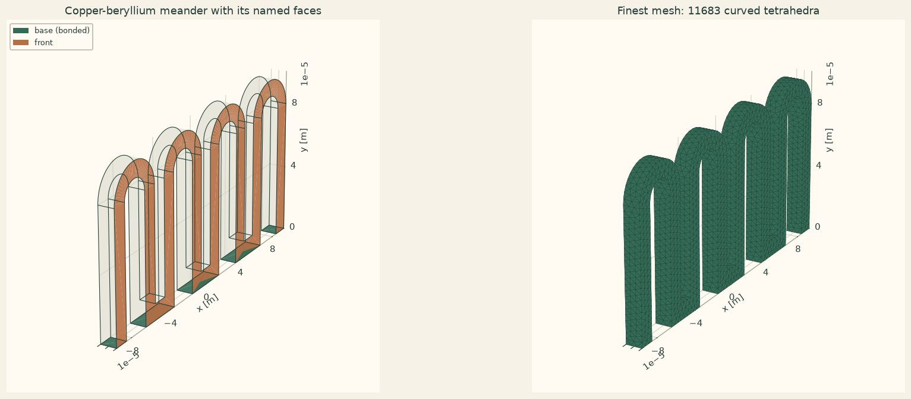

Docs › Examples › Thermal expansion in a MEMS device
Thermal stress · 3D
Thermal expansion in a MEMS device
A copper-beryllium meander of four hairpins, 10 µm thick, heated by its drive current and expanding on the board it is bonded to.
Run locally with OneSimulation. The example downloads are free. Running them requires an activated runtime. Runtime Alpha 0.2.1a7 · CPython 3.13 on macOS (Apple Silicon), Ubuntu 22.04 (x86-64), and Windows x64. Installation and activation · View pilot plans. Scope of the reference checks.

What it computes
The micrometre part is read from a STEP file and meshed with curved quadratic tetrahedra. Steady heat conduction with the Joule heat as a volumetric source and convection to the air gives the temperature, which enters linear elasticity as thermal strain through a field coupling, on a rigid and on a matched board. The script that builds the STEP file comes with the notebook.
What it checks
Device temperature 323.673 K against the published 323.67 K (+0.003 K) and the lumped-body value 323.673 K, heat balance exact to six digits; on the matched board the displacement equals alpha dT x to 1e-5 and the stress vanishes (3e-5 E alpha dT); on the rigid board the largest displacement converges to 45.41 nm (0.05 % change between the two finest meshes).
Geometry
The notebook starts at the import of the CAD file mems_thermal_actuator_expansion.step: STEP (AP242), readable by any CAD program, with the names of the faces that the boundary conditions use. Put it next to the notebook.


The geometry script
The script mems_thermal_actuator_expansion_geometry.py builds the geometry with the CAD objects of OneSimulation and writes the file. Change a dimension there, run it, and run the notebook again.
"""Geometry of the OneSimulation example "Thermal expansion in a MEMS device".
Builds a meander of four hairpins etched from a 10 µm copper-beryllium layer with the CAD objects of
OneSimulation: legs 10 µm wide and 80 µm tall, half-ring arches (inner radius 10 µm, outer radius
20 µm) and short bars that join neighbouring hairpins at the bottom. The meander stands on its
bottom faces in the x-y plane and is 10 µm deep in z. Writes mems_thermal_actuator_expansion.step
with the face groups base (the bonded bottom faces at y = 0) and front (z = 10 µm).
"""
from onesim.cad.d3 import AnnularCylinder, Box, UnionFromObjects
um = 1e-6
width, height, depth, inner, outer, pitch, hairpins = (
10 * um,
80 * um,
10 * um,
10 * um,
20 * um,
50 * um,
4,
)
first = -(hairpins * pitch - pitch + 4 * width) / 2
parts = []
for i in range(hairpins):
left = first + i * pitch
centre = left + 2 * width
parts += [
Box(length=width, width=height, height=depth, origin=(x, 0.0, 0.0))
for x in (left, left + 3 * width)
]
parts.append(
AnnularCylinder(
inner_radius=inner,
outer_radius=outer,
length=depth,
origin=(centre, height, 0.0),
)
& Box(
length=2 * outer,
width=outer,
height=depth,
origin=(centre - outer, height, 0.0),
)
)
if i < hairpins - 1:
parts.append(
Box(
length=width,
width=width,
height=depth,
origin=(left + 4 * width, 0.0, 0.0),
)
)
meander = UnionFromObjects(objects=parts)
meander = meander.grouped(
base=meander.select(
faces=lambda face: face.kind == "plane" and abs(face.center[1]) < 1e-12
),
front=meander.select(
faces=lambda face: face.kind == "plane" and abs(face.center[2] - depth) < 1e-12
),
)
meander.save("mems_thermal_actuator_expansion.step")The notebook
The complete notebook, cell by cell. Run it to produce the figures and the comparison printout.
Micro-electro-mechanical devices such as gyroscopes and resonators must keep their shape while the drive current heats them. The device is a meander of four hairpins etched from a 10 µm layer of the copper-beryllium alloy UNS C17500: legs 10 µm wide and 80 µm tall, half-ring arches with radii of 10 and 20 µm, and short bars that join the hairpins at the bottom. The meander stands on its bottom faces, which are bonded to a circuit board; all other faces lose heat to the surrounding air by natural convection.
The temperature follows from steady heat conduction with a volumetric source \(Q\), the displacement from linear thermoelasticity with the thermal strain \(\alpha\,(T-T_\mathrm{ref})\):
Joule heating. The heat comes from the drive current. A Joule source computed from an electric-current model is not yet available through Problem/Simulation, so the heat is prescribed as the uniform volumetric source it produces, \(Q=I^2R/V=I^2\rho_e/A^2=10^8\) W/m³. With the resistivity \(\rho_e\approx3.8\cdot10^{-8}\) Ω m of the alloy and the 10 µm × 10 µm cross-section \(A\) this is a drive current of about 5 mA; the slight current crowding at the inner edge of the arches is neglected.
The part comes from the CAD file mems_thermal_actuator_expansion.step, written by mems_thermal_actuator_expansion_geometry.py with the CAD objects of OneSimulation. It names the bonded faces base.
| face | thermal condition | mechanical condition |
|---|---|---|
base (bonded to the board) | insulated | fixed (rigid board), or the board's own free expansion (matched board) |
| all other faces | convection, \(h=10\) W/(m² K), air at 298 K | traction free |
Reference. (1) The published device temperature of 323.67 K for this configuration. The Biot number \(h\,d/k\) is of order \(10^{-6}\), so the device is isothermal to within millikelvin at the lumped-body temperature \(T_\infty+QV/(hA)\) (F. P. Incropera et al., Fundamentals of Heat and Mass Transfer, 7th ed., Wiley 2011, Sec. 5.2). (2) On a board that expands like the alloy itself the device expands freely: the displacement is exactly \(\alpha\,\Delta T\,\mathbf x\) and the stress vanishes (S. Timoshenko and J. N. Goodier, Theory of Elasticity, 3rd ed., McGraw-Hill 1970, §150). (3) On a rigid board, a mesh study of the largest displacement.
import numpy as np
from onesim.cad.exchange import load
from onesim.materials import IsotropicSolid, PolynomialLaw
from onesim.meshing import TetrahedralMesher, with_order
from onesim.numerics import Numerics
from onesim.numerics.fem import FiniteElement, Lagrange
from onesim.numerics.field_transfer import FiniteElementEvaluation
from onesim.numerics.linear import SparseDirect
from onesim.physics.heat_transfer import ConvectiveHeatFlux, HeatConduction, HeatFlux
from onesim.physics.solid_mechanics import (
FixedDisplacement,
IsotropicThermalExpansion,
LinearElasticity,
TractionFree,
)
from onesim.results.comparisons import convergence
from onesim.results.integration import measure
from onesim.simulation import Problem, Simulation
from onesim.simulation.field_connections import FieldCoupling
from onesim.visualization import plots, theme
theme.set()Geometry and mesh
load returns the meander with its named faces. TetrahedralMesher fills the micrometre part with tetrahedra; geometry_order=2 with curver=with_order gives them quadratic edges that follow the round arches. Three cell sizes serve the mesh study.
um = 1e-6
meander = load("mems_thermal_actuator_expansion.step")
faces = meander.boundaries
free = faces.all - faces.base
sizes = [6.0 * um, 4.5 * um, 3.5 * um]
meshes = [
TetrahedralMesher(target_size=size, geometry_order=2, curver=with_order).generate(
meander
)
for size in sizes
]
view = plots.Camera(elevation=22, azimuth=-60, up="y")
fig = plots.figure(1, 2, size=(16, 6))
plots.geometry(
meander,
selection={"base (bonded)": faces.base, "front": faces.front},
labels=False,
camera=view,
title="Copper-beryllium meander with its named faces",
ax=fig[0],
)
plots.mesh(
meshes[-1],
groups=("all",),
legend=False,
camera=view,
title=f"Finest mesh: {meshes[-1].cell_count} curved tetrahedra",
ax=fig[1],
)
plots.show()Temperature
The alloy data of C17500 at 20 °C are \(k=208\) W/(m K), \(E=138\) GPa, \(\nu=0.30\) and \(\alpha=16.8\cdot10^{-6}\) 1/K, with linear temperature laws about 293.15 K. The conductivity is taken at the air temperature; it has no visible effect on the temperature level, which is set by the convection at the surface.
Q, h_air, T_air, T_ref, T_published = 1e8, 10.0, 298.0, 298.0, 323.67
conductivity = PolynomialLaw((208.0, 208.0 * 2.0e-4), unit="W/m/K", reference=293.15)
modulus = PolynomialLaw((138e9, -138e9 * 3.5e-4), unit="Pa", reference=293.15)
expansion = PolynomialLaw((16.8e-6, 16.8e-6 * 2.5e-4), unit="1/K", reference=293.15)
alloy_at = lambda T: IsotropicSolid(
density=8830.0,
specific_heat_capacity=420.0,
poisson_ratio=0.30,
thermal_conductivity=float(conductivity.evaluate(temperature=T)),
youngs_modulus=float(modulus.evaluate(temperature=T)),
thermal_expansion_coefficient=float(expansion.evaluate(temperature=T)),
)
numerics = Numerics(
spatial=FiniteElement(element=Lagrange(order=2)), linear_solver=SparseDirect()
)
heat = HeatConduction(domain=meander.volume, material=alloy_at(T_air), heating=Q)
heating = Problem(
name="Joule-heated meander",
geometry=meander,
physics=(heat,),
boundary_conditions=(
ConvectiveHeatFlux(
boundary=free,
physics=heat,
heat_transfer_coefficient=h_air,
ambient_temperature=T_air,
),
HeatFlux(boundary=faces.base, physics=heat, value=0.0),
),
)
temperatures = [
Simulation(problem=heating, mesh=mesh, numerics=numerics)
.solve_stationary()
.field(heat.temperature)
for mesh in meshes
]
T = temperatures[-1]
T_nodes = np.ravel(T.evaluate(meshes[-1].coordinates))
T_device = float(T_nodes.mean())Thermal expansion
The elastic data are taken at the computed device temperature. The temperature field enters the elastic model as thermal strain through a field coupling. On the rigid board the bonded faces are fixed; on the matched board they follow the free expansion \(\alpha\,\Delta T\,\mathbf x\) of a board made of the same alloy.
alloy = alloy_at(T_device)
alpha, rise = alloy.thermal_expansion_coefficient, T_device - T_ref
solid = LinearElasticity(
domain=meander.volume,
material=alloy,
thermal_strain=IsotropicThermalExpansion(reference_temperature=T_ref),
)
supports = {
"rigid": (0.0, 0.0, 0.0),
"matched": lambda x, y, z: alpha * rise * np.stack((x, y, z), axis=-1),
}
runs = {
(board, level): Simulation(
problem=Problem(
name=f"Meander on a {board} board",
geometry=meander,
physics=(solid,),
boundary_conditions=(
FixedDisplacement(
boundary=faces.base, physics=solid, value=supports[board]
),
TractionFree(boundary=free, physics=solid),
),
couplings=(
FieldCoupling(
source=temperatures[level],
target=solid.temperature,
transfer=FiniteElementEvaluation(),
),
),
),
mesh=meshes[level],
numerics=numerics,
).solve_stationary()
for board, level in [("rigid", 0), ("rigid", 1), ("rigid", 2), ("matched", 1)]
}
rigid, matched = [runs["rigid", level] for level in range(3)], runs["matched", 1]Results
Temperature against the published value and the lumped body, the heat balance, the free expansion on the matched board and the mesh study on the rigid board.
V, A = measure(T), measure(T, boundary=free)
T_lumped = T_air + Q * V / (h_air * A)
print(
f"device temperature: {T_nodes.min():.4f} K to {T_nodes.max():.4f} K, mean {T_device:.4f} K"
)
print(
f"published {T_published:.2f} K: deviation {T_device - T_published:+.3f} K ({100 * (T_device - T_published) / (T_published - T_air):+.2f} % of the rise)"
)
print(
f"lumped body T_air + QV/(hA) = {T_lumped:.4f} K (V = {V / um**3:.0f} µm³, A = {A / um**2:.0f} µm²)"
)
print(
f"heat balance: generated {1e6 * Q * V:.5f} µW, convected {1e6 * T.boundary_flux(free):.5f} µW"
)
print("cell size [µm] tetrahedra mean temperature [K]")
for size, mesh, field in zip(sizes, meshes, temperatures):
print(
f"{size / um:14.1f} {mesh.cell_count:12d} {np.mean(field.evaluate(mesh.coordinates)):20.4f}"
)
points = np.asarray(meshes[1].coordinates)
u_matched = matched.field(solid.displacement).evaluate(points)
print(
f"matched board: largest deviation from alpha dT x = {np.abs(u_matched - alpha * rise * points).max() / (alpha * rise * np.abs(points).max()):.1e} "
f"of the largest displacement; largest von Mises stress = "
f"{matched.field(solid.von_mises_stress).evaluate(points).max() / (alloy.youngs_modulus * alpha * rise):.1e} E alpha dT"
)
u_max = [
float(
np.linalg.norm(
result.field(solid.displacement).evaluate(mesh.coordinates), axis=1
).max()
)
for result, mesh in zip(rigid, meshes)
]
study = convergence(u_max, sizes)
print("rigid board: cell size [µm] largest displacement [nm]")
for size, value in zip(sizes, u_max):
print(f"{size / um:28.1f} {1e9 * value:24.3f}")
print(
f"change between the two finest meshes {100 * study.change:.2f} %, observed order {study.order or np.nan:.1f}, "
f"extrapolated {1e9 * (study.extrapolated or np.nan):.3f} nm; free expansion of the arch tops alpha dT y = {1e9 * alpha * rise * 100 * um:.3f} nm"
)Figure
The temperature (deviation from its mean in millikelvin), the displacement on the rigid board on the 300 times magnified shape, the von Mises stress on the rigid board and the mesh study.
displacement, mises = rigid[-1].field(solid.displacement), rigid[-1].field(
solid.von_mises_stress
)
fig = plots.figure(2, 2, size=(16, 11))
plots.surface(
T,
component=lambda values, position: 1e3 * (values - T_device),
camera=view,
label="T - T_mean [mK]",
title=f"Temperature, mean {T_device:.2f} K",
ax=fig[0],
)
plots.surface(
displacement,
component=lambda u, position: 1e9 * np.linalg.norm(u, axis=1),
deformation=displacement,
deformation_scale=300.0,
camera=view,
label="|u| [nm]",
title="Displacement on the rigid board (magnified 300 times)",
ax=fig[1],
)
plots.surface(
mises,
component=lambda s, position: s / 1e6,
limits=(0.0, 60.0),
camera=view,
label="von Mises stress [MPa]",
title="Thermal stress on the rigid board",
ax=fig[2],
)
plots.line(
[size / um for size in sizes],
{"rigid board": [1e9 * value for value in u_max]},
markers=True,
hlines={"extrapolated to zero cell size": 1e9 * (study.extrapolated or u_max[-1])},
xlabel="cell size [µm]",
ylabel="largest displacement [nm]",
title="Mesh study",
ax=fig[3],
)
plots.show()Going further
Bond the meander to a glass-epoxy board with \(\alpha=18\cdot10^{-6}\) 1/K by changing the support of the matched board: the board then stretches the feet and the stress concentrates at the joining bars. Doubling the drive current quadruples the heat source and the temperature rise, because the device stays in the lumped-body regime. Change the arch radii or the leg height in mems_thermal_actuator_expansion_geometry.py and write the STEP file again to compare designs.